Phối cảnh minh họa · tài liệu chủ đầu tư
A Gamuda Land Community
Artisan Park – Điểm đến hoàn hảo tại trung tâm Thành phố mới Bình Dương
Artisan Park là khu nhà phố thương mại 5,6 ha cách khu phức hợp World Trade Center Bình Dương khoảng 300 m, do Gamuda Land (Malaysia) phát triển.
Đăng ký nhận bảng hàng- 5,6haKhu nhà phố thương mại
- 349Nhà phố 3–4 tầng
- 2Mặt tiền mỗi căn
- 300mTới WTC Bình Dương
Thông tin dự ánThông tin tổng quan Artisan Park
Dự án gồm 349 nhà phố thương mại 3–4 tầng, mỗi căn có 2 mặt tiền, quy hoạch quanh phố đi bộ, công viên và quảng trường – phù hợp vừa ở vừa kinh doanh.
| Tên dự án | Artisan Park – A Gamuda Land Community |
|---|---|
| Vị trí | Lô 1, G9, K5 – đường Lê Hoàn, Thành phố mới Bình Dương, phường Bình Dương, TP.HCMTrước sắp xếp hành chính 2025: phường Hòa Phú, TP. Thủ Dầu Một, tỉnh Bình Dương |
| Chủ đầu tư & phát triển | Gamuda LandCông ty bất động sản của tập đoàn Gamuda Berhad (Malaysia) |
| Diện tích đất | 5,6 ha (56.015 m²) |
| Sản phẩm | 349 nhà phố thương mại174 căn 3 tầng (sàn 216–291 m²) · 175 căn 4 tầng (sàn 348–472 m²) |
| Phân khu | The Orbit (G1) · The Ori (G9) · The Ova (K5) |
| Mật độ | Xây dựng 64,05% (phần tòa nhà) · cảnh quan 17% |
| Pháp lý | Sở hữu lâu dài với người Việt Nam; người nước ngoài theo hợp đồng mua bán 50 nămĐã có giấy chứng nhận quyền sử dụng đất, chấp thuận chủ trương đầu tư và giấy phép bán hàng (kể cả cho người nước ngoài) |
| Bàn giao | Hoàn thiện mặt ngoài, phần thô bên trong |
| Chứng chỉ xanh | EDGE Advanced (giai đoạn thiết kế, SGS Việt Nam cấp 11/2022)Thiết kế kiến trúc thụ động: tiết kiệm khoảng 70% năng lượng, 28% nước, giảm 45% năng lượng hàm chứa trong vật liệu xây dựng |
| Thiết kế & thi công | BYG Projects Vietnam (kiến trúc) · Không Gian Hòa Bình (kiến trúc địa phương)Tổng thầu: Công ty CP Đầu tư Thương mại Dịch vụ Đại Đông Hồ |
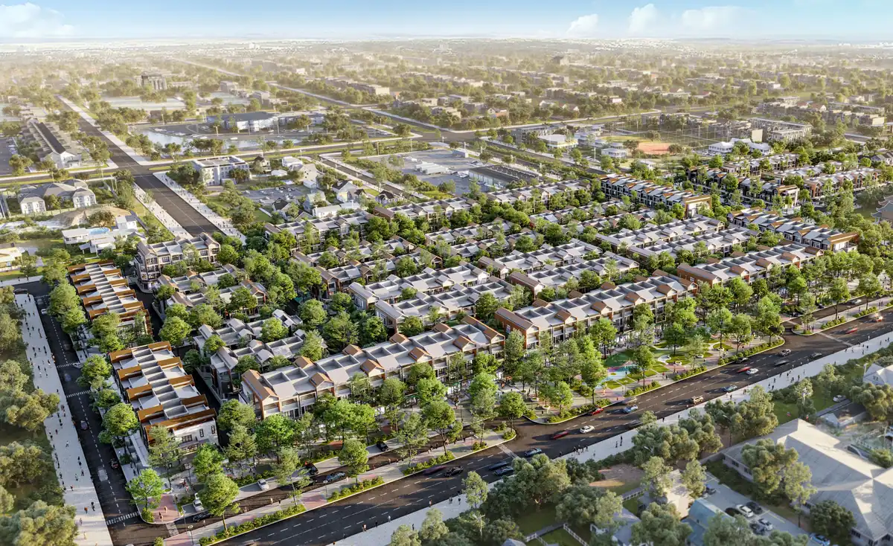
- 174Nhà phố 3 tầng
- 175Nhà phố 4 tầng
- 3Phân khu
Trung tâm của trung tâmVị trí – Trung tâm Thành phố mới Bình Dương
Artisan Park nằm trên đường Lê Hoàn, giữa các trục Trịnh Hoài Đức – Phó Cơ Điều, cách khu phức hợp World Trade Center và ga metro (tương lai) khoảng 300 m, cách Trung tâm hành chính Bình Dương (cũ) khoảng 2 km.
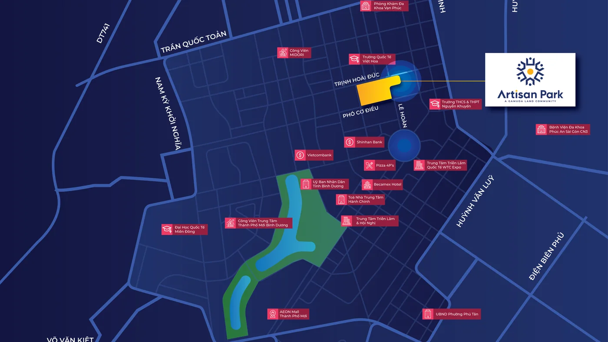
- 05phút
- World Trade Center 300 m
- Trung tâm hành chính Bình Dương (cũ) < 2 km
- Aeon Mall Midori < 2 km
- Aeon Mall Sora Gardens < 3 km
- Khu phức hợp Hikari < 3 km
- Trường Quốc tế Việt Hoa 650 m
- Trường Quốc tế Singapore
- Đại học Quốc tế Miền Đông
- Bệnh viện Đa khoa Phúc An Sài Gòn
- 10phút
- Công viên trung tâm 75 ha
- Sân golf Harmonie
- Sân golf Twin Doves
- Trung tâm thể dục thể thao
- 15phút
- Bệnh viện Đa khoa Bình Dương
- Phòng khám Đa khoa Vạn Phúc
- Bệnh viện Đa khoa Phương Chi
Thời gian, khoảng cách theo tài liệu chủ đầu tư (slide đào tạo bán hàng giai đoạn 2, 03/2026), mang tính tham khảo.
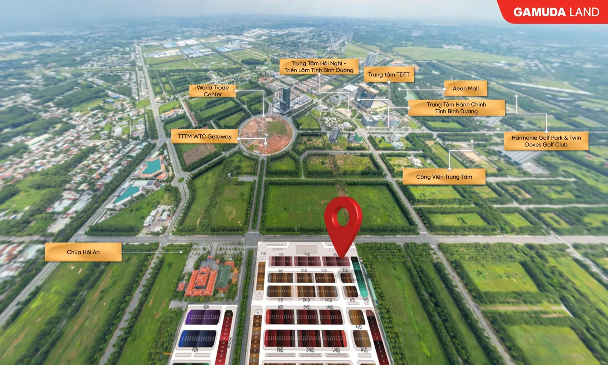
Kết nối hạ tầng vùng phía Bắc TP.HCM
- Vành đai 3Dự kiến khép kín, thông xe trước 30/06/2026
- Vành đai 4Kết nối sân bay quốc tế Long Thành, dự kiến hoàn thành 2027
- Cao tốcTP.HCM – Thủ Dầu Một – Chơn Thành, dự kiến hoàn thành 2027
- Quốc lộ 13Đoạn cầu Bình Triệu – ranh Bình Dương cũ mở rộng 10–14 làn xe (khởi công quý IV/2026)
- Metro2 tuyến metro kết nối Bình Dương: khởi công 2026, hoàn thành 2030 – rút ngắn thời gian về trung tâm TP.HCM còn 20–30 phút
- WTC GatewayTrung tâm thương mại hơn 7 ha cạnh dự án, dự kiến phục vụ 3 triệu lượt khách mỗi tháng
Tiến độ hạ tầng theo tài liệu chủ đầu tư, có thể thay đổi theo quyết định của cơ quan có thẩm quyền.
Thủ phủ công nghiệp phía NamTrung tâm công nghiệp và đô thị phía Bắc TP.HCM
Bình Dương (nay thuộc TP.HCM) luôn trong nhóm dẫn đầu cả nước về thu nhập bình quân, tiêu dùng, bán lẻ và thu hút đầu tư nước ngoài – nền tảng cho nhu cầu ở, thuê và kinh doanh quanh Thành phố mới Bình Dương.
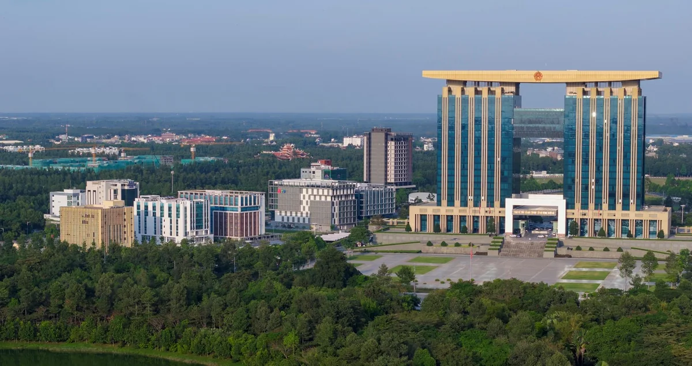
- 8,88%Tăng trưởng GRDP 2025 – dẫn đầu TP.HCM
- 27,7%Tỷ lệ nhập cư cao nhất cả nước (2024)
- 42tỷ USDVốn FDI lũy kế – nhóm 10 địa phương thu hút FDI hàng đầu
- 2,87triệuDân số 2024, 68% trong độ tuổi lao động
Thủ phủ công nghiệp – cơ sở cho thị trường lưu trú và tiêu dùng
Nhu cầu mua để ở và cho thuê tăng theo lực lượng lao động làm việc tại các khu công nghiệp hiện hữu và mới.
- 30Khu công nghiệp
- 12.700 haTổng diện tích
- 90%Tỷ lệ lấp đầy
- 531.058Lao động làm việc
Theo đề án 01/2026, đô thị khoa học công nghệ Bắc TP.HCM có khu phức hợp khoa học và công nghệ 20 ha với hạt nhân là Trung tâm hành chính tỉnh Bình Dương (cũ) – nay thuộc phường Bình Dương, TP.HCM – được chuyển đổi công năng thành tòa nhà khoa học công nghệ. Artisan Park ở vị trí trung tâm của phường Bình Dương, đón dòng chuyên gia quốc tế, nhân lực chất lượng cao và làn sóng tiêu dùng hiện đại trong giai đoạn tăng tốc phát triển.
Ở phân khúc nhà phố thương mại, nguồn cung sơ cấp năm 2025 chiếm dưới 10% thị trường, trong khi giá bán sơ cấp tăng khoảng 24% – cao hơn mức tăng trung bình toàn thị trường. Quanh dự án, giá bán khu vực lân cận tăng trung bình khoảng 5%/năm.
Nguồn: tài liệu chủ đầu tư (slide đào tạo bán hàng giai đoạn 2, 03/2026) trích Tổng cục Thống kê, Bộ Tài chính, Savills, Becamex.
Buôn có bạn – bán có phườngTiềm năng khai thác thương mại
Mỗi căn nhà phố có 2 mặt tiền – một mặt hướng ra đại lộ, một mặt hướng vào phố đi bộ trong lòng Artisan Park – nên cửa hàng tiếp cận khách từ cả hai phía.
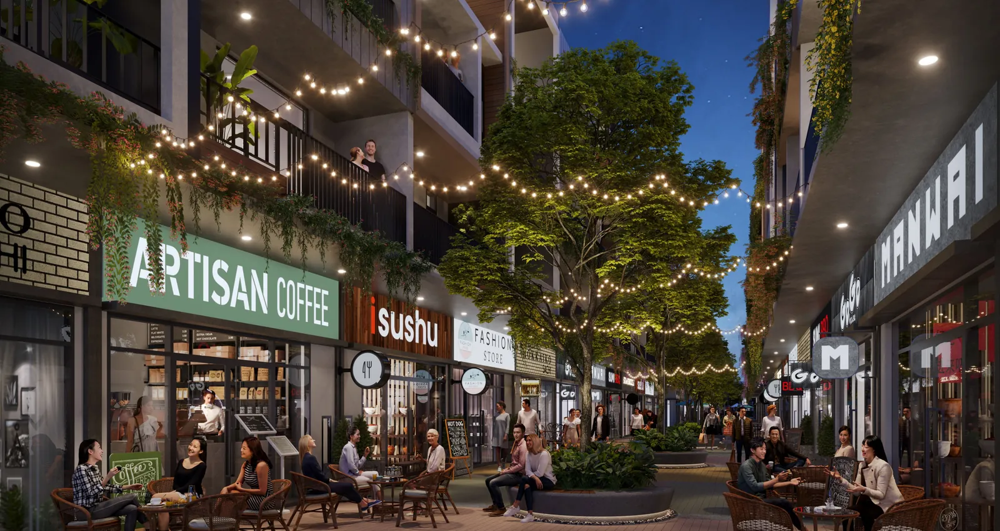
- 347.000Người sống trong bán kính 7 km
- 25.000Nhân viên, chuyên gia từ 5.000 ha khu công nghiệp lân cận
- 16.900Cư dân dự kiến sinh sống quanh Artisan Park trong vài năm tới
- 3 triệuLượt khách mỗi tháng dự kiến tới TTTM WTC Gateway
Mặt tiền cho kinh doanh
2 mặt tiền mọi căn
Căn góc có 3 mặt tiền – tiếp cận khách từ đại lộ và phố đi bộ.
Hệ kính kịch trần
Cửa kính tầng trệt xoá ranh giới trong – ngoài, kết nối khách hàng.
Biển hiệu lớn
Thu hút ánh nhìn, nhận diện thương hiệu nổi bật trên mặt phố.
Vỉa hè rộng thoáng
Dễ di chuyển, dễ mua sắm, khách dừng chân lâu hơn.
Phố đi bộ Alfresco, quảng trường mua sắm và các thương hiệu F&B, dịch vụ đã vận hành tại dự án (Bếp của Chồng, Chacee, Damu, ACT+…) tạo dòng khách thường xuyên cho cả khu phố.
Công năng linh hoạt từng tầng
- Tầng trệtMặt bằng kinh doanh: cà phê, nhà hàng, cửa hàng, trung tâm tiếng Anh…
- Tầng 2Mặt bằng kinh doanh hoặc văn phòng
- Tầng 3 – 4Không gian sinh hoạt riêng của gia đình
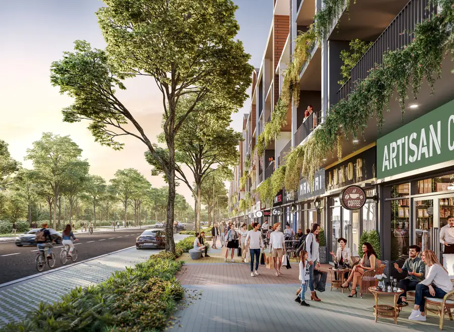
Hơn 10 tiện ích nội khuTiện ích nội khu Artisan Park
Sống "Walkable & Biophilic": chạm tới thiên nhiên và hệ thống tiện ích nội khu chỉ trong 5 phút đi bộ.
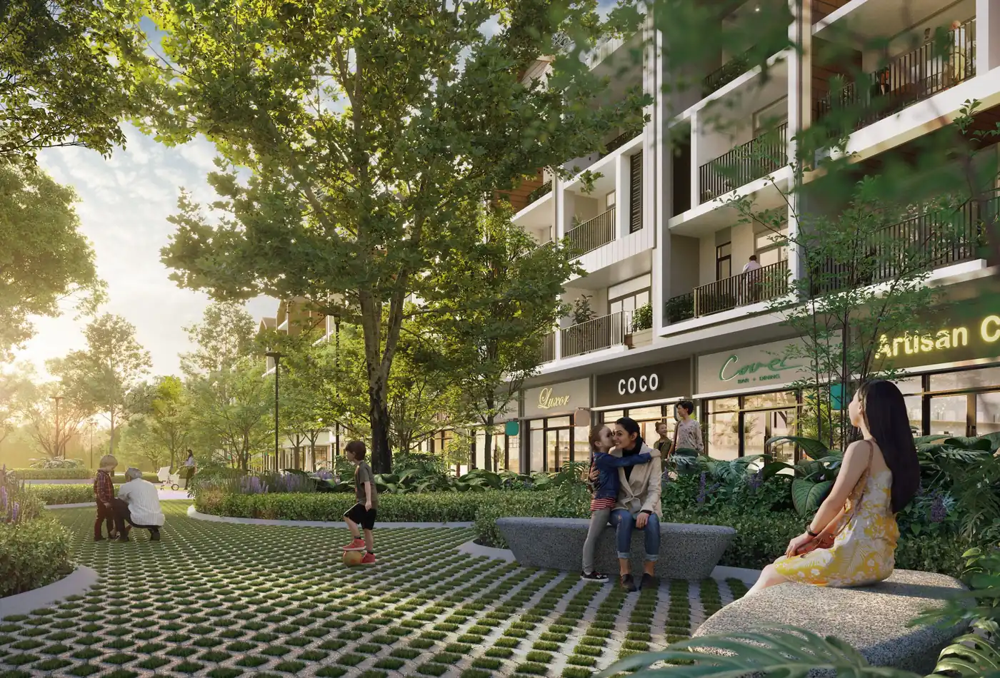
Thiên nhiên xanh giữa phố thương mại
- 1Công viên cộng đồng
- 2Vườn có lối đi bộ kết nối
- 3Bãi cỏ Miyawaki
- 4Khu vườn chơi trẻ em
Kiến trúc Biophilic: thông gió và lấy sáng tự nhiên, cây xanh len vào ban công từng dãy nhà.
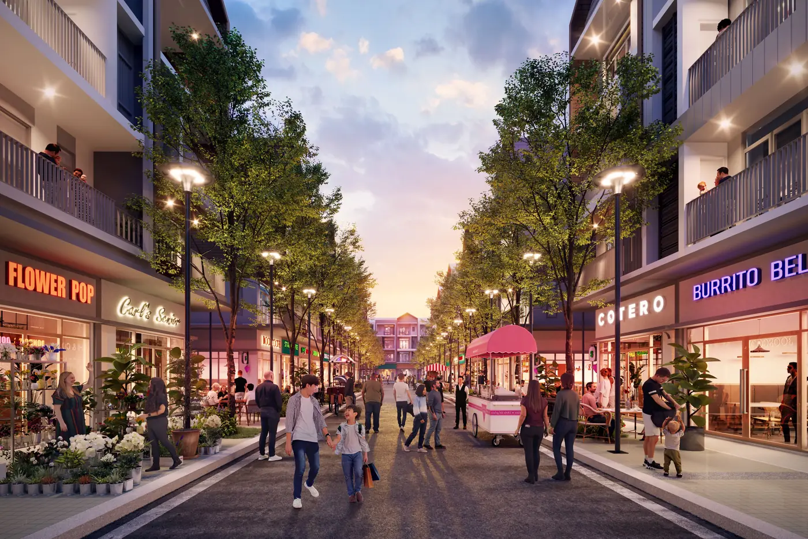
Một điểm đến đa trải nghiệm
- 1Quảng trường mua sắm
- 2Phố đi bộ Alfresco – ẩm thực, cà phê, giải trí
- 3Quảng trường trung tâm – gặp gỡ, sự kiện
Ăn uống, mua sắm, gắn kết – mọi nhu cầu thường ngày được đáp ứng ngay trong khu phố.
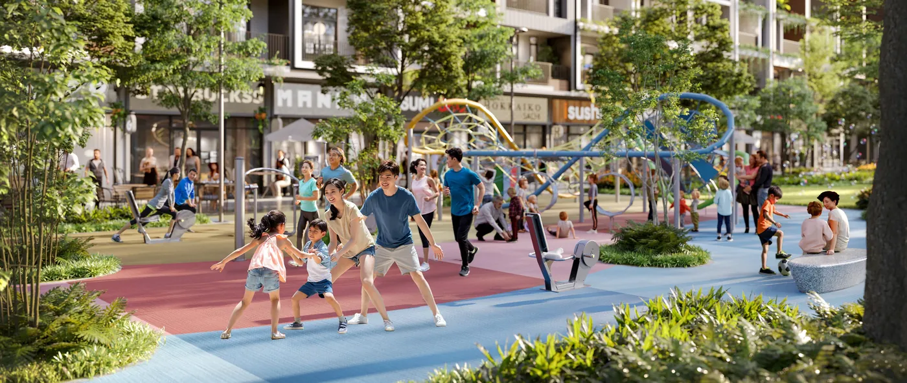
Năng động mỗi ngày
- 1Sân bóng rổ
- 2Khu thể thao đa năng ngoài trời
- 3Sân chơi ngoài trời
- 4Khu vui chơi trẻ em
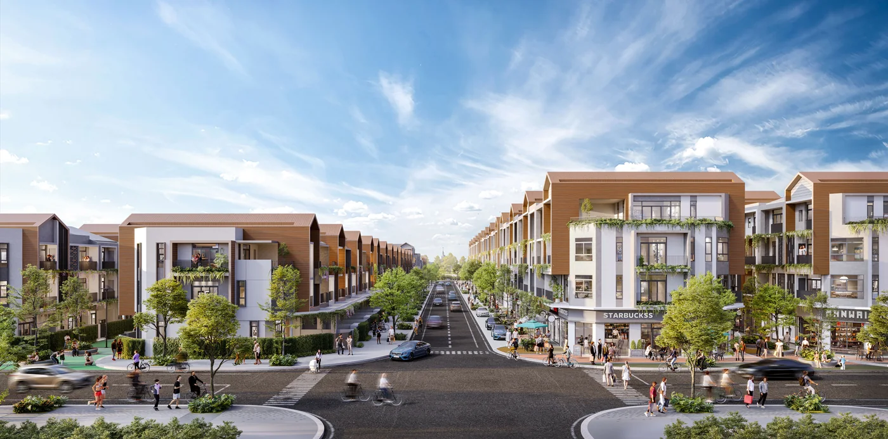
Bãi đậu xe luôn trong tầm mắt
- 1119 chỗ đậu ô tô
- 2126 chỗ đậu xe máy
- 3Trạm sạc xe điện
- 4Đường nội khu rộng 15–25 m, vỉa hè rộng thoáng
Hệ thống đường nội khu theo nguyên tắc "bàn cờ" giúp di chuyển dễ dàng giữa các tuyến phố và cửa hàng chỉ trong khoảng 5 phút đi bộ.
Nhà phố 3 tầng & 4 tầng349 nhà phố thương mại – 3 phân khu
Ý tưởng "Những chiếc lá": các dãy nhà phố bố trí bất quy tắc, đan xen ba kiểu mái nhọn, mái xiên, mái ngang – phá vỡ sự đơn điệu, kế thừa nét nhà phố địa phương với diện mạo hiện đại.
- G1
The Orbit
Trung tâm của sự sôi động – nơi diễn ra các hoạt động xã hội, giải trí của cả khu phố.
- G9
The Ori
Trung tâm của sự bình yên – môi trường sống cân bằng, an lành, xứng đáng để gọi là nhà.
- K5
The Ova
Trung tâm của sự thịnh vượng – phân khu cao cấp, nơi nuôi dưỡng thành công.
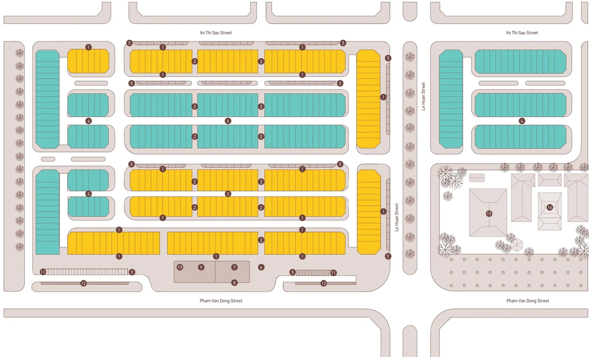
- Nhà phố 3 tầng
- Nhà phố 4 tầng
Nhà phố 3 tầng 174căn
Đất 5 × 20 m, 7,5 × 20 m, 11 × 20 m (một số lô 6 × 20 m, 5 × 17 m) · tổng sàn 216–291 m² · cao 12,5 m (tầng 1 cao 3,6 m).
Nhà phố 4 tầng 175căn
Đất 5 × 20 m, 7,5 × 20 m, 11 × 20 m (một số lô 5 × 17 m, 9 × 20 m) · tổng sàn 348–472 m² · cao 14,2 m (tầng 1 cao 4,3 m).
Kiến trúc Biophilic
Thông gió, lấy sáng tự nhiên; ban công rộng 1,6 m; có vị trí chờ lắp thang máy (khách tự xin phép theo quy định). Khoảng cách giữa các dãy nhà 6–7 m.
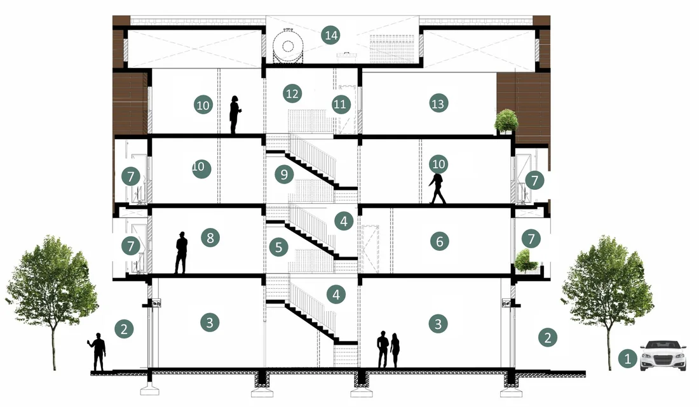
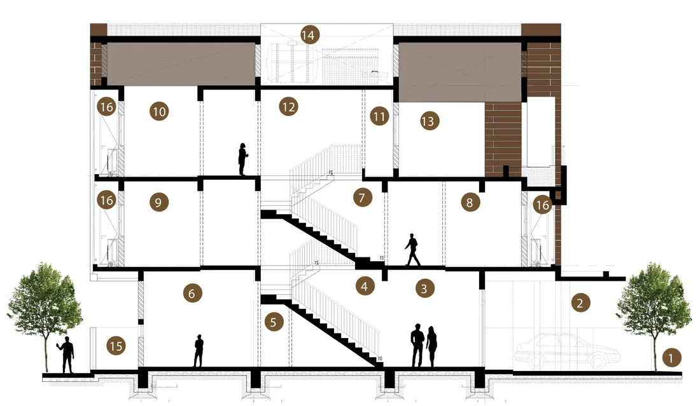
4 mẫu 4 tầng · 4 mẫu 3 tầngMặt bằng 8 mẫu nhà điển hình
Chọn một mẫu để xem mặt bằng từng tầng – bấm vào bản vẽ để xem lớn. Số căn là số căn của từng mẫu theo tài liệu chủ đầu tư.
Nhà phố thương mại 4 tầng
Nhà phố 3 tầng
- Loại nhà4 tầng
- Diện tích đất7,5 × 20 m
- Tổng diện tích sàn419,64 m²
- Số căn của mẫu4 căn
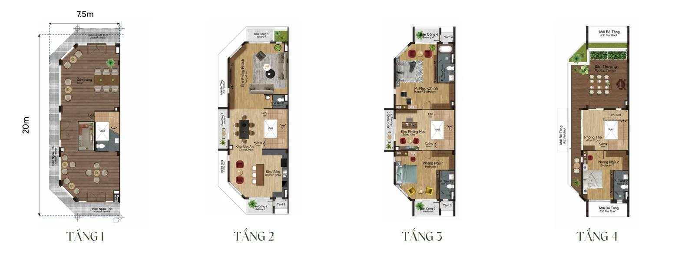
- Loại nhà4 tầng
- Diện tích đất5 × 20 m
- Tổng diện tích sàn348,29 m²
- Số căn của mẫu2 căn
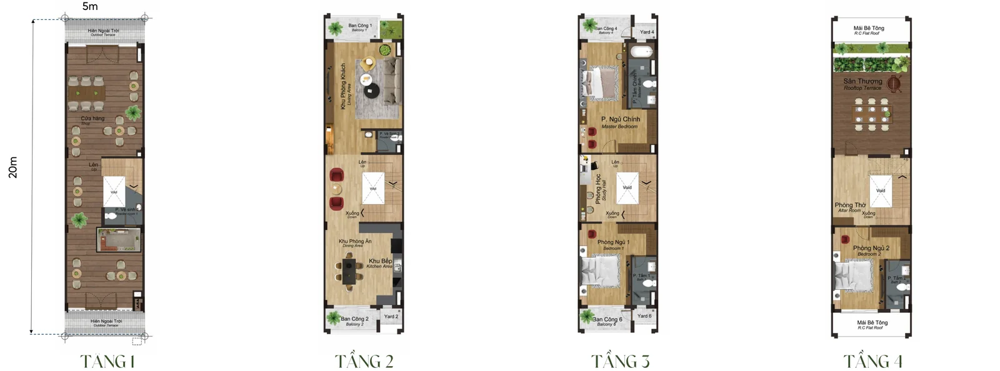
- Loại nhà4 tầng
- Diện tích đất5 × 20 m
- Tổng diện tích sàn348,50 m²
- Số căn của mẫu92 căn
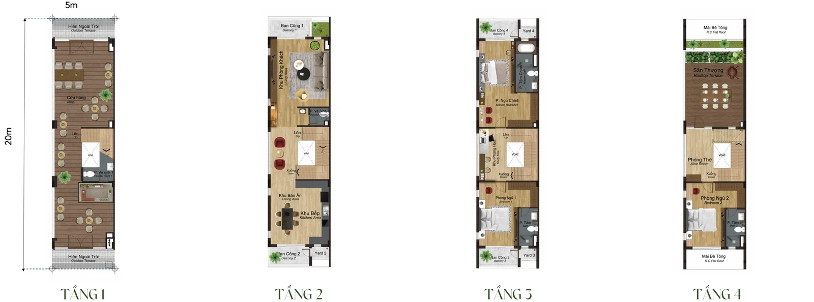
- Loại nhà4 tầng
- Diện tích đất11 × 20 m
- Tổng diện tích sàn471,77 m²
- Số căn của mẫu4 căn
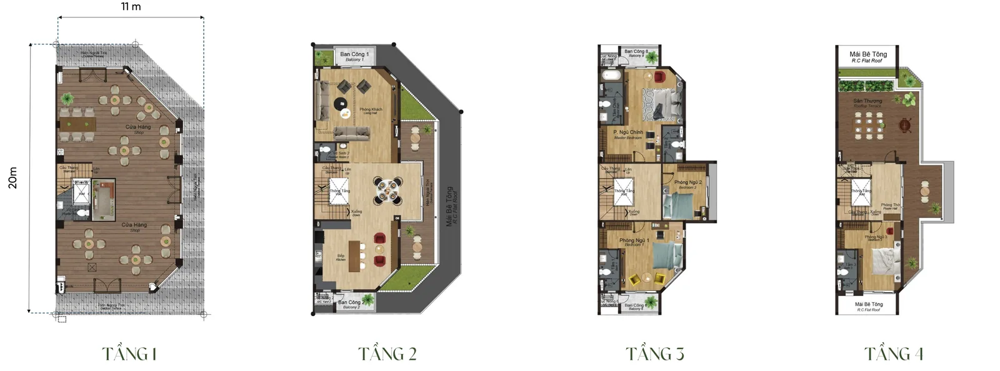
- Loại nhà3 tầng
- Diện tích đất7,5 × 20 m
- Tổng diện tích sàn277,19 m²
- Số căn của mẫu19 căn
- Loại nhà3 tầng
- Diện tích đất5 × 20 m
- Tổng diện tích sàn216,18 m²
- Số căn của mẫu4 căn
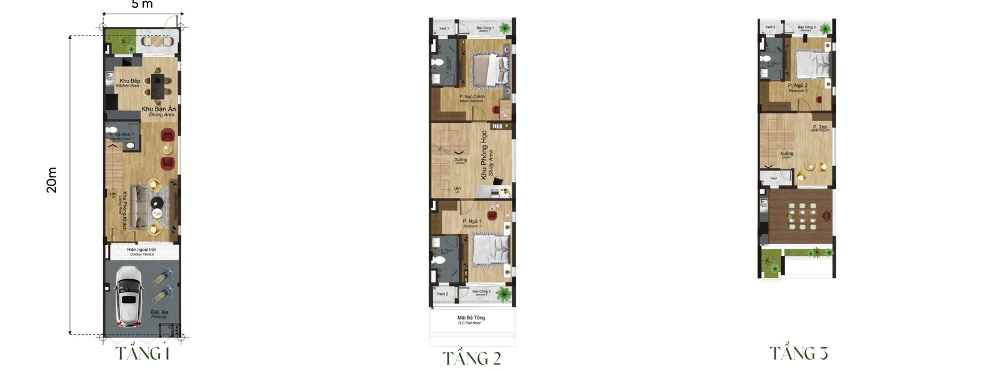
- Loại nhà3 tầng
- Diện tích đất5 × 20 m
- Tổng diện tích sàn216,19 m²
- Số căn của mẫu146 căn
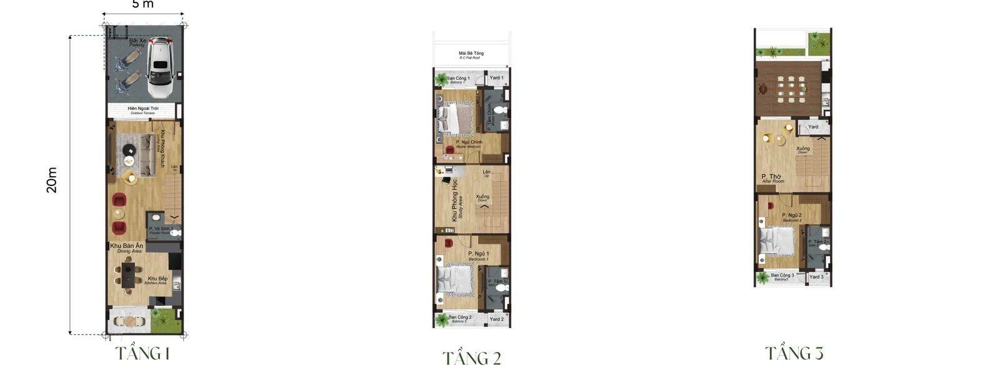
- Loại nhà3 tầng
- Diện tích đất11 × 20 m
- Tổng diện tích sàn291,39 m²
- Số căn của mẫu4 căn
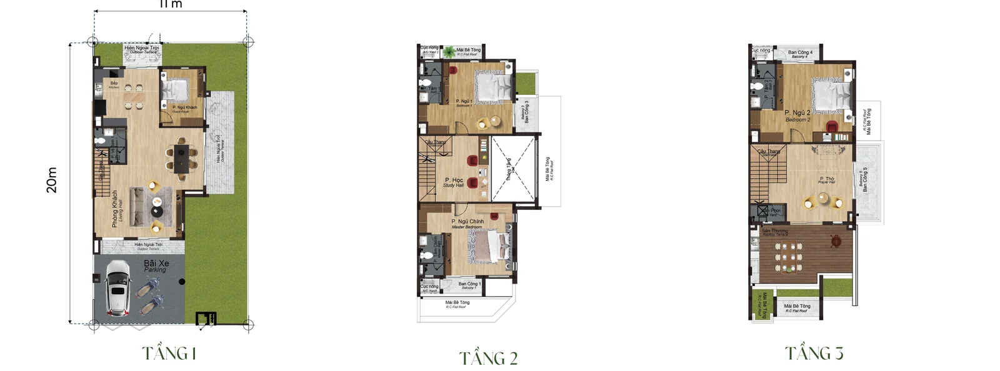
8 mẫu điển hình theo tài liệu chủ đầu tư; dự án còn các biến thể mẫu nhà khác theo từng lô. Bố trí nội thất trên bản vẽ mang tính minh họa – nhà bàn giao hoàn thiện mặt ngoài, phần thô bên trong.
Gamuda LandGamuda Land – nhà phát triển bất động sản Malaysia
Gamuda Land là công ty phát triển bất động sản của Gamuda Berhad – một trong những tập đoàn kỹ thuật, xây dựng và hạ tầng hàng đầu Malaysia, hiện phát triển dự án tại Malaysia, Singapore, Việt Nam, Úc và Anh Quốc.
- 1995Năm thành lập
- 2007Gia nhập thị trường Việt Nam
- Top 3Nhà phát triển BĐS nước ngoài tốt nhất tại Việt Nam
Gamuda Land theo đuổi mục tiêu Net-Zero 2050 (SBTi) chung của tập đoàn, kiến tạo không gian sống thân thiện với môi trường từ thiết kế đến vận hành.
Artisan Park đạt 3 giải thưởng PropertyGuru Vietnam Property Awards 2022: Dự án nhà phố thương mại tốt nhất Việt Nam, Thiết kế kiến trúc nhà ở tốt nhất, Thiết kế kiến trúc cảnh quan nhà ở tốt nhất – cùng giải Dự án nhà phố thương mại xuất sắc khu vực châu Á.
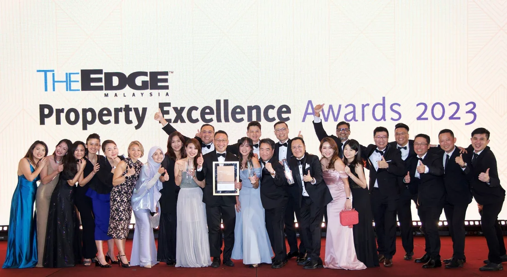
| Dự án | Địa phương | Quy mô |
|---|---|---|
| Gamuda City | Hà Nội | ~274 ha |
| Celadon City | TP. Hồ Chí Minh | ~83 ha |
| Springville | Đồng Nai | ~18,2 ha |
| Artisan Park | TP. Hồ Chí Minh | ~5,6 ha |
| The Meadow | TP. Hồ Chí Minh | ~5,0 ha |
| Eaton Park | TP. Hồ Chí Minh | ~3,7 ha |
| Elysian | TP. Hồ Chí Minh | ~2,8 ha |
| Ambience | Hải Phòng | ~1,1 ha |
Câu hỏi thường gặpHỏi đáp về Artisan Park
Artisan Park ở đâu?
Artisan Park ở Lô 1, G9, K5 – đường Lê Hoàn, Thành phố mới Bình Dương, phường Bình Dương, TP.HCM (trước đây thuộc phường Hòa Phú, TP. Thủ Dầu Một, tỉnh Bình Dương). Dự án cách khu phức hợp World Trade Center và ga metro tương lai khoảng 300 m, cách Trung tâm hành chính Bình Dương (cũ) khoảng 2 km.
Artisan Park có quy mô bao nhiêu?
Dự án rộng 5,6 ha (56.015 m²) gồm 349 nhà phố thương mại: 174 căn 3 tầng và 175 căn 4 tầng, chia 3 phân khu The Orbit (G1), The Ori (G9) và The Ova (K5). Mật độ xây dựng phần tòa nhà 64,05%, mật độ cảnh quan 17%.
Nhà phố Artisan Park có diện tích bao nhiêu?
Nhà phố 3 tầng có tổng sàn khoảng 216–291 m², nhà phố 4 tầng khoảng 348–472 m²; đất phổ biến 5 × 20 m, 7,5 × 20 m và 11 × 20 m. 8 mẫu điển hình: SH1a 419,64 m², SH2a 348,29 m², SH1l 348,50 m², SH1k2 471,77 m² (4 tầng); TH1e 277,19 m², TH1h 216,18 m², TH2a 216,19 m², TH1d2 291,39 m² (3 tầng).
Nhà phố Artisan Park có kinh doanh được không?
Có. Mọi căn có 2 mặt tiền (căn góc 3 mặt tiền) với cửa kính kịch trần, biển hiệu lớn và vỉa hè rộng; tầng trệt làm mặt bằng kinh doanh, tầng 2 kinh doanh hoặc văn phòng, tầng 3–4 để ở. Theo tài liệu chủ đầu tư, khoảng 347.000 người sống trong bán kính 7 km và 16.900 cư dân dự kiến sinh sống quanh dự án.
Pháp lý Artisan Park thế nào?
Sở hữu lâu dài với người Việt Nam; người nước ngoài theo hợp đồng mua bán 50 năm. Dự án đã có giấy chứng nhận quyền sử dụng đất, chấp thuận chủ trương đầu tư và giấy phép bán hàng, kể cả cho người nước ngoài.
Artisan Park bàn giao nhà thế nào?
Nhà bàn giao hoàn thiện mặt ngoài, phần thô bên trong – chủ nhà tự hoàn thiện nội thất theo nhu cầu ở hoặc kinh doanh. Nhà có vị trí chờ lắp thang máy; khách hàng tự làm thủ tục xin phép lắp đặt theo quy định.
Artisan Park có những tiện ích gì?
Hơn 10 tiện ích cảnh quan – nội khu: quảng trường mua sắm, phố đi bộ Alfresco, quảng trường trung tâm, công viên cộng đồng, vườn có lối đi bộ kết nối, bãi cỏ Miyawaki, sân bóng rổ, khu thể thao đa năng ngoài trời, khu vui chơi trẻ em, 119 chỗ đậu ô tô, 126 chỗ đậu xe máy và trạm sạc xe điện.
Chủ đầu tư Artisan Park là ai?
Chủ đầu tư và phát triển là Gamuda Land – công ty bất động sản của tập đoàn Gamuda Berhad (Malaysia), thành lập năm 1995, vào Việt Nam từ 2007 với các dự án Gamuda City, Celadon City, Eaton Park, Elysian, The Meadow, Springville, Ambience và Artisan Park. ERA Vietnam là đại lý phân phối chính thức dự án Artisan Park.
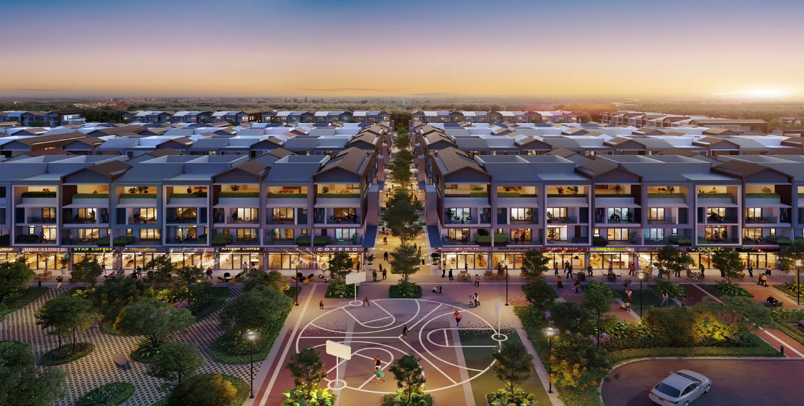
Đăng ký nhận bảng hàngĐăng ký nhận bảng hàng Artisan Park
Nhận bảng hàng, mặt bằng phân khu và tư vấn chọn vị trí kinh doanh từ ERA Vietnam.
- Bảng hàng nhà phố 3 tầng và 4 tầng đang mở bán
- Mặt bằng phân khu The Orbit, The Ori, The Ova
- Tư vấn chọn vị trí theo nhu cầu ở kết hợp kinh doanh hoặc đầu tư cho thuê
- Nhà phố 3 tầng
- Nhà phố 4 tầng
Vui lòng điền thông tin vào biểu mẫu. Đội ngũ chuyên viên ERA Vietnam sẽ liên hệ hỗ trợ Quý khách trong thời gian sớm nhất.
Hoặc gọi ngay 094.1125.000